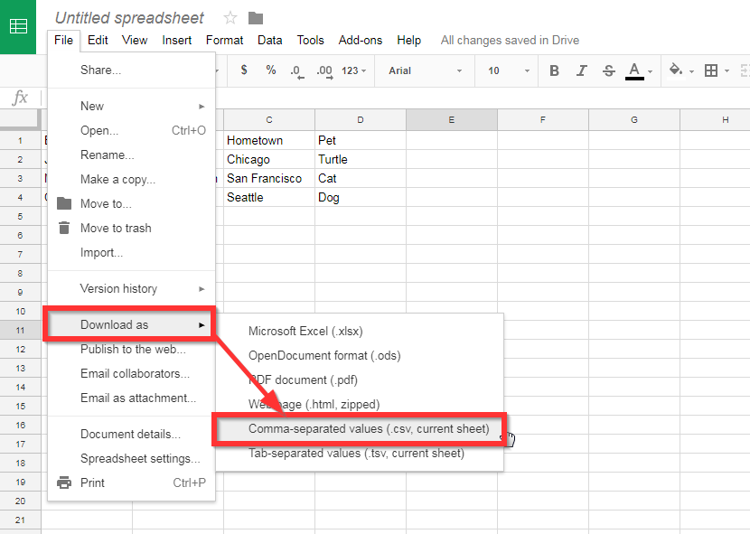

This tool is only used on days where the Google Form is used. On days where the Form is used, we need to navigate to the spreadsheet table 2. Select the date that you have taken attendance for and download the sheet as shown in the picture below. Then go to the CSV to JSON tab above and upload your file, check to make sure it is correct and then click submit.
This tool is used in the beginning of the year when QR codes are being created. You can also use this when creating QR codes for new students as well.
Create a text file and give it the same formatting as the picture below.
For students: